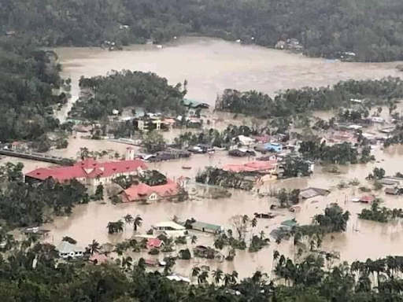

Impact

Typhoon Odette left over 2.4 million people in need of assistance after severely damaging homes, infrastructure, and agricultural crops. It was reported that there were around 400 fatalities, 78 missing persons, and almost 1,150 injured as of January 3, 2022. The estimated cost of the damage to infrastructure and agriculture was 23.4 billion pesos, according to the chief of the national disaster agency.
Humanitarian Response
In response to the typhoon that hit several regions, organizations such as the World Food Programme, All Hands and Hearts, along with the International Organization for Migration provided food, emergency cash, water, hygiene supplies, and relief items to help affected communities rebuild their lives. Together with the Department of Science and Technology - Philippine Institute of Volcanology and Seismology (DOST-PHIVOLCS), the "Planned SmartReady To Rebuild" action was created in response to the damage caused by Typhoon Odette in the Philippines.
Program and Progress
With Typhoon Odette, the government focuses on rebuilding the most important facilities such as roads, bridges, and power, achieving good results in numerous places. Government programs provide shelter for displaced families and assist farmers in recovering crop losses. Humanitarian organizations are supplying food, water, and healthcare equipment in addition to government efforts. Despite these gains, issues remain, such as lack of resources and transportation obstacles caused by the ongoing COVID-19 outbreak.